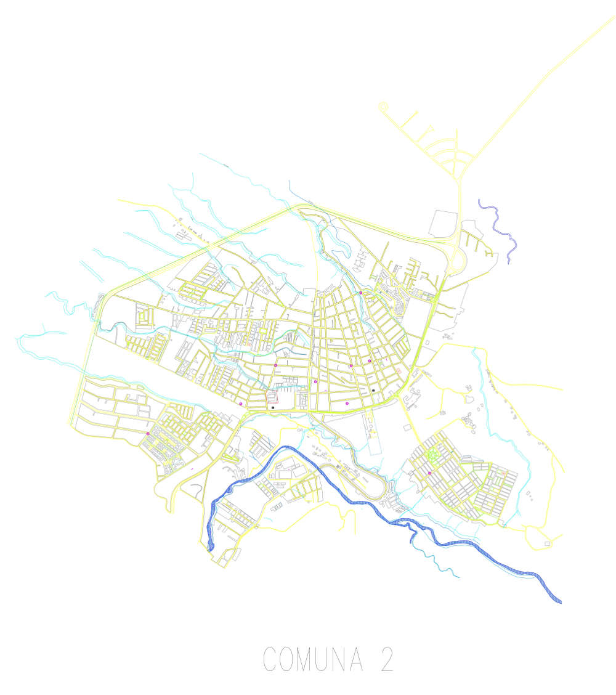
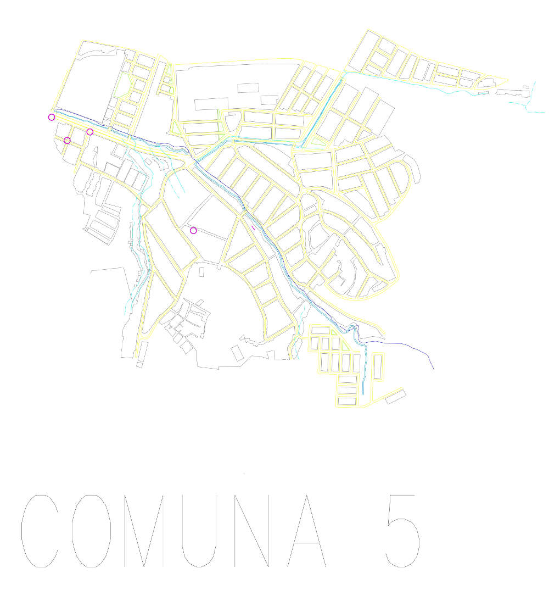

La localización geográfica del delito por medio de mapas es una herramienta para gestionar y relacionar el delito y los datos geográficos y representarlos geográficamente. El resultado de esta herramienta es una imagen de dos o tres dimensiones (mapa) que proporciona al lector a través de instrumentos de lectura, diversas informaciones útiles sobre la relación entre delito y espacio. […]Las características de este mapa son la representatividad de un área real, la presencia de información útil (para el lector), la presencia de una clave para la lectura (leyenda)”.
Para entender el delito, además de la caracterización de los sujetos, móviles y las proporciones a nivel municipal, la localización también aporta para reconocer las áreas de mayor incidencia delictiva. En este sentido, la realización de un mapa del crimen para Popayán tiene como objetivo brindar por primera vez, una imagen que permite apreciar de manera detallada, el lugar donde se llevaron a cabo diferentes tipos de delitos en la ciudad para los años correspondientes a 1973,1985 y 1993. Su elaboración, se realizó a partir de la investigación documental del diario El Liberal.
1973 ▲ 59 | 1985 □ 50 | 1993 ● 881
COMUNA 1
1973 ▲ 7 | 1985 □ 6 | 1993 ● 22
COMUNA 2

1973 ▲ 3 | 1985 □ 2 | 1993 ● 9
COMUNA 3

1973 ▲ 1 | 1985 □ 1 | 1993 ● 12
COMUNA 4

1973 ▲ 32 | 1985 □ 14 | 1993 ● 111
COMUNA 5

1973 ▲ 0 | 1985 □ 0 | 1993 ● 4
COMUNA 6
1973 ▲ 0 | 1985 □ 0 | 1993 ● 21
COMUNA 7

1973 ▲ 0 | 1985 □ 0 | 1993 ● 8
COMUNA 8

1973 ▲ 6 | 1985 □ 0 | 1993 ● 39
COMUNA 9
1973 ▲ 2 | 1985 □ 3 | 1993 ● 9
“La delincuencia y la violencia urbana se nos presenta como un fenómeno que en su evolución ha ido haciendo resaltar variables más asociadas a la vida de los barrios: asociación a narcotráfico, a bajos grados de integración social, al control territorial ejercido por bandas delictuales, a subculturas que rechazan el sistema legal y a una débil presencia del Estado, todo lo cual da como resultado, una reiteración de delitos que tienen alto impacto emocional para las víctimas y sus entornos, los que más probablemente son trabajadores de sectores medios y populares”.
Montt, Gambi. Et. Al. Aportes de la ecología del delito al diseño de políticas públicas. En: Revista Invi N°64. Volumen 23. (Noviembre, 2008). p.30 -31